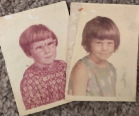
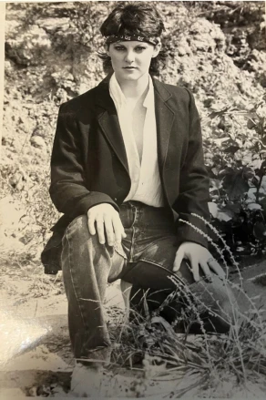
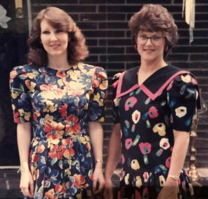
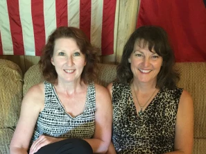

Lucky
 Leana (left) and Kaylon (right) in 1966
Leana (left) and Kaylon (right) in 1966
Today is my older sister’s birthday. I could have gotten her a gift, but public embarrassment sounded like something she would really enjoy. So here we go.
Growing up, people always said I was the smart one while Leana was more athletic and adventuresome. Here’s an example. One of my earliest memories of my sister was on a road trip with our parents. I was around five years old, so she would have been around seven. We were probably driving from Mississippi to Arkansas to have Thanksgiving with extended family. We had a big station wagon with a roof rack over the back end. My parents were in the front seat, and I was in the back seat. My sister should have also been in the back seat, but she wasn’t. I suppose she got bored and looked around to see what she could do to entertain herself. Being the adventurous one, she rolled down the back window and climbed out. She stood on the back bumper while holding on to the roof rack. Again, road trip. Interstate. I have no idea what the speed limit on I-40 was back in 1969, but I am positive my dad was exceeding it.
I watched my sister for a moment, and, being the smart one, I decided she really shouldn’t be doing that. I tapped my mom on the shoulder and said, “Mom.” She didn’t even look at me. Just told me she was talking to Dad. It took three tries before my mom got irritated enough to look at me. That’s when she saw Leana and made Dad pull over. My memory gets a little fuzzy after that, but I like to think I saved her life that day. And it’s a good thing, because she has pulled my butt out of the fire more than once since her highway adventure. She has also pushed me and encouraged me through many difficult days. She is even the reason my youngest son exists, but I’ll get to that in a minute.

School days. Kaylon (left); Leana (right). Taken
about the time of the highway incident.
The first 10 years of my life I spent in awe of Leana. She could do anything and seemed to have no fear. She wasn’t much bigger than me, but if someone tried to bully me at school—well, you forgot she was little. To me, she was larger than life. And to anyone who made her mad by messing with me, she probably seemed larger than life to them too.
She could talk me into anything. One Saturday when I was in the first grade, we were looking for something to do. Although our mom was home, it was the seventies and we typically spent the day outside. Unsupervised. Our house had a detached garage. Behind the garage there was a large pile of hay and miscellaneous pieces of lumber. I’m pretty sure the matches were my idea, but it was Leana who decided we should set the hay on fire. Being the smart one, I asked how we would put the fire out, and she said we could just smother it with a piece of lumber. That plan actually worked pretty well until it didn’t. Not knowing what else to do, I left Leana tending the fire and went inside to tell our mom. You’d think after the highway adventure, she would take me a little more seriously when I tried to get her attention. She didn’t. By the time I got her outside, all of the hay was on fire. Mom called the fire department while a neighbor turned a water hose on the hay. Even though the fire was out by the time the firemen got there, we still made the local news the next day. Mom was not amused, and we got in trouble all over again.
The second 10 years of my life, I just wanted to be Leana. She seemed to have everything. Pretty, smart, athletic, popular, talented. Guys were always vying for her attention. When I was finally old enough to try out for softball, I naturally wanted to be on Leana’s team. She was an excellent and versatile player. Shortstop, catcher, even pitcher when needed. The coach was THRILLED to have Leana’s younger sister on the team and didn’t even make me try out. He just accepted me thinking I would be just as athletic as Leana. He likely never made that mistake again.
 Leana during college.
When I was 15 or so my dad taught me how to drive. Neither of us enjoyed the experience. A couple of years later, when I wanted to learn to drive my mom’s car, a five-speed MGB, it was Leana who taught me how to drive a stick shift. She also taught me how to multitask while driving—no easy feat when you need one hand dedicated to shifting. Her talents never ceased to amaze me.

Kaylon (left) and Leana (right)
as twenty-somethings.
After I graduated from high school, I never seriously considered any college other than Delta State—my sister’s school. We didn’t spend much time together during those days, but I felt better knowing she was nearby. After she graduated, I finally had to figure out life on my own. I managed, but even before the days of cell phones, I knew she was only a phone call away.
When I got married, my husband thought he wanted a large family. He grew up the oldest of five and always expected to have as many children as his parents. I was not fully committed to a big family, and so we decided to start with one and “see how it goes.” After Kendrick was born, my husband decided maybe one was enough. He loved Kendrick so much and felt we could take better care of him if the family stayed small. Well, having grown up with the best sister in the world, I could not imagine my son being an only child.
Although Kendrick and Keaton fought a lot when they were younger, they also had plenty of misadventures together. Still, I’m not sure they would be friends if they weren’t brothers. I know Leana and I would be friends even if she wasn’t my sister. I guess that makes me the lucky one.

Kaylon (left) and Leana (right)
as twenty-somethings.
Quick Links
| Pages | Other Pages | |
|---|---|---|
| Home | The Agent Orange Trilogy | |
| The RAM Blogs | Edge of Justice | |
| Books | Help | |
| Media | ||
| About Me | ||